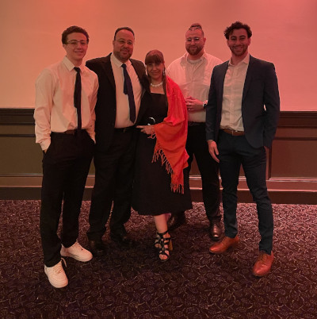

| I am currently a Sophmore student at University of Massachusetts, Boston, majoring in Information Technology. My love and interest of all technology started at a young age playing lots of video games and using mostly Apple products. Now, my use of technology is much more diversified using Apple, Windows, and Linux systems frequently. This interest is also a result of my father's influence, which I will cover in the next section. Some of my other interests include Basketball and Music. Basketball has been a big part of my life and I still love playing with my brother and friends all the time. I also spend a majority of my time watching basketball, whether its NBA, NCAA, or even highschool. As for music, I listen to many artists but some of my favorites right now are Polo G, Juice WRLD, and A Boogie Wit da Hoodie. My favorite genres are Rap and Hip-Hop, specifically Melodic Rap. Some of my favorites from these artists are at the bottom of the page, ready to play. |
 |
My parents, Ali and May, are from Lebanon and Palestine and both lived in Lebanon for the start of their lives. My dad left Lebanon to attend university in the US at The University of Rhode Island, while my mom stayed to attend university in Lebanon. After graduating, my dad came back to Lebanon to propose to my mom. Shortly after they moved to Canada to continue their lives together, and have my two brothers. This is when they moved to Massachusetts to have me. As of now, my mom is a stay-at-home mother and my dad works at Intel. My dad working in the tech feild at Intel really influenced me and worked in my benefit when it comes to having access to and experience with different technology, and I hope his expertise will come in handy when I am looking for jobs as well. |